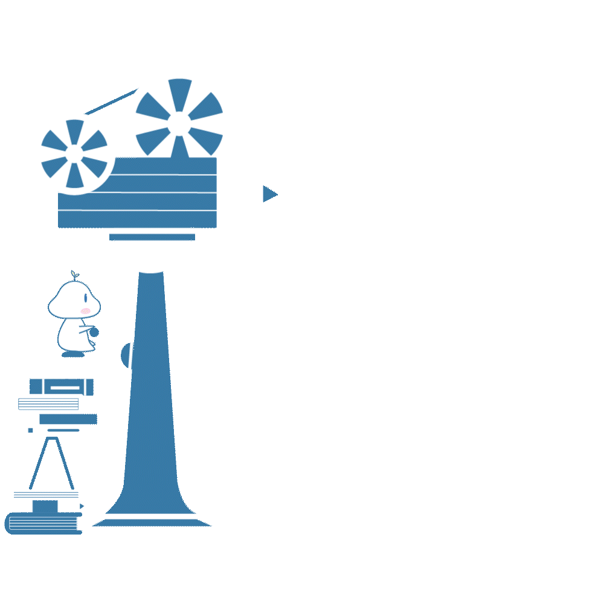
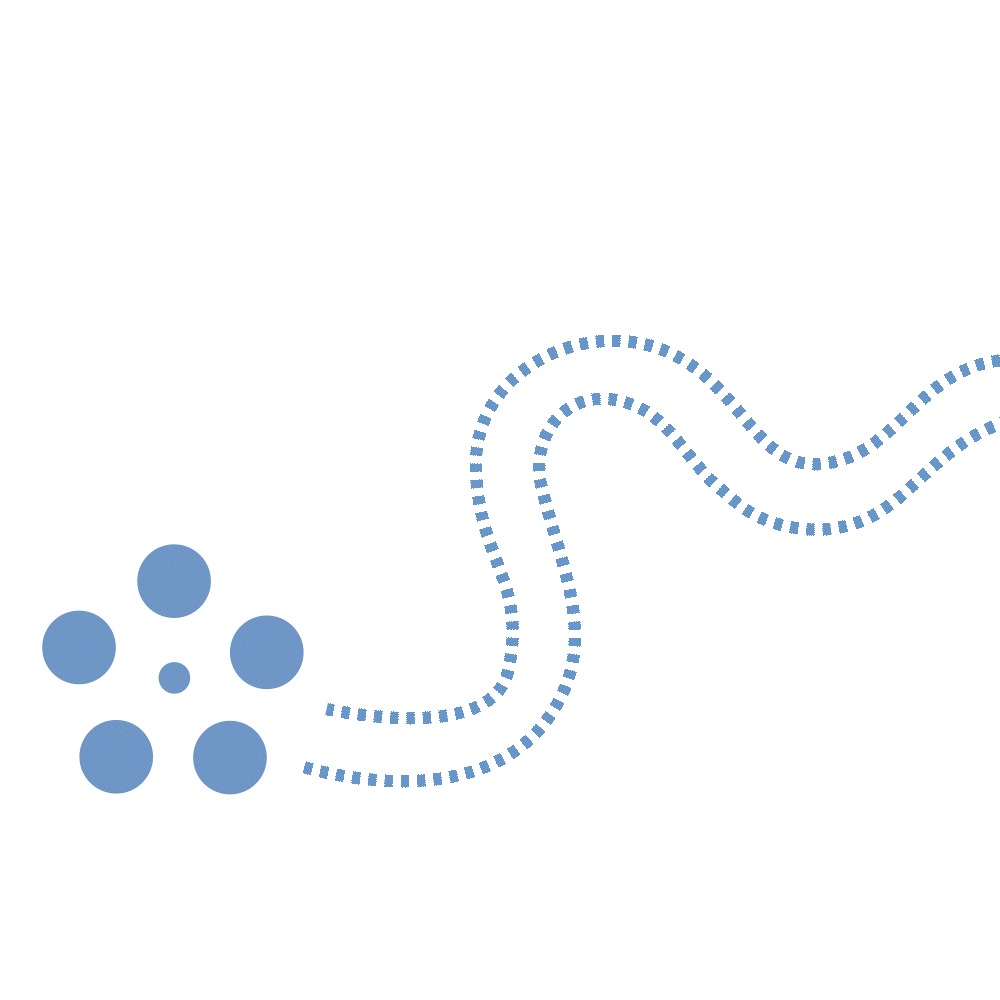
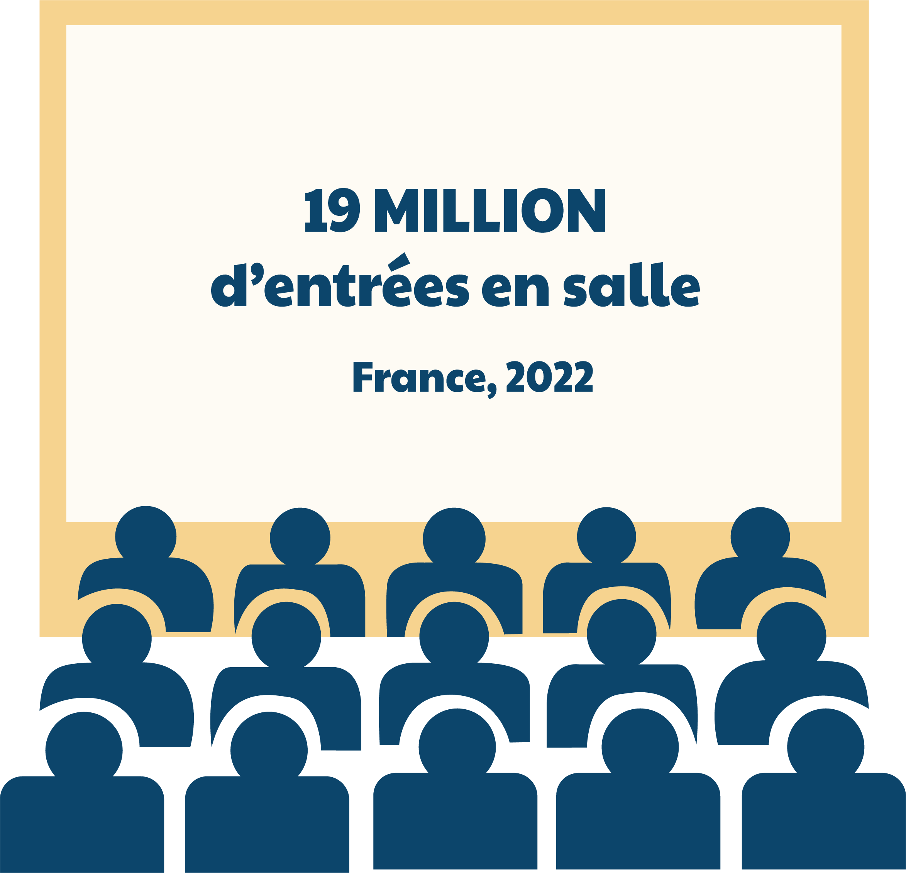
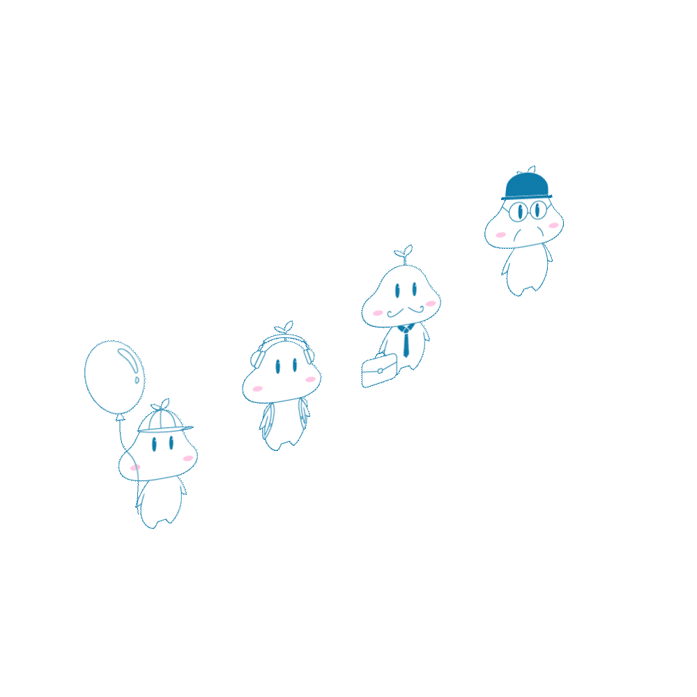
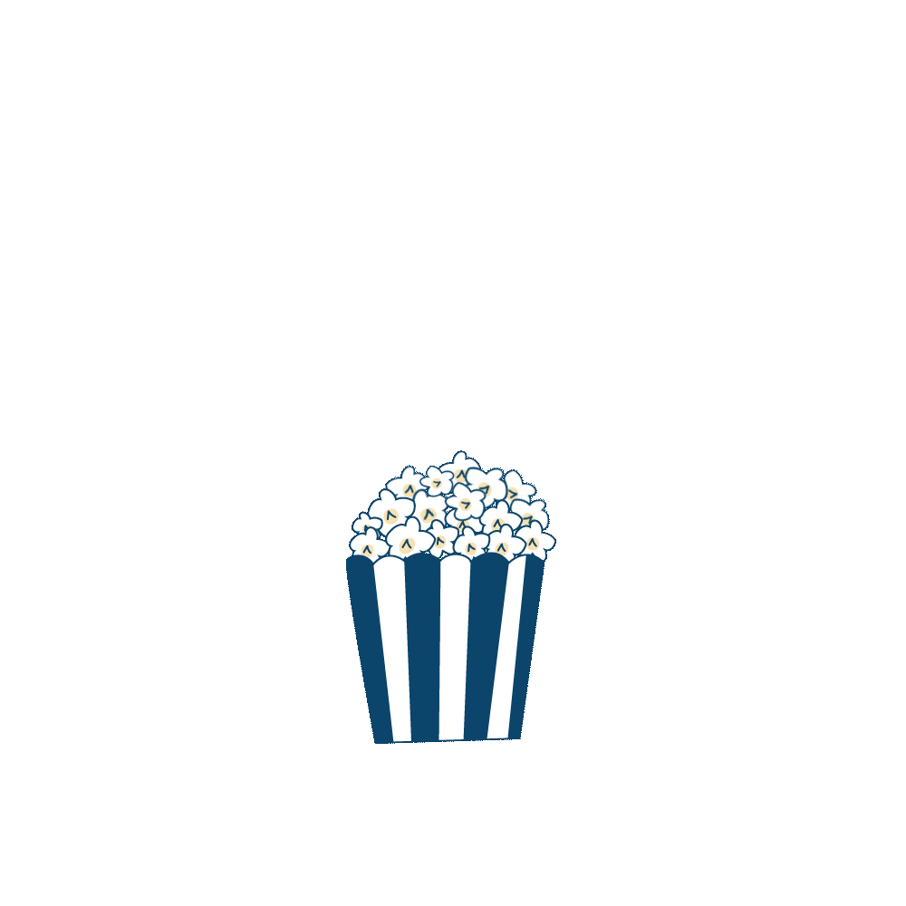

Nous avons tous déjà plongé dans l'univers enchanteur d'un film d'animation, n'est-ce pas ? Ces moments où les personnages prennent vie, où les mondes fantastiques s'ouvrent devant nos yeux, créant des souvenirs indélébiles... On te propose aujourd'hui de d'en découvrir un peu plus sur ce genre de films.
Quoi de mieux pour commencer cette aventure que d'en apprendre davantage sur différentes techniques d'animation ?
Dans un premier temps, le 2D traditionnel, qui constitue un véritable pilier de l'animation, donne vie à des personnages iconiques avec ses mouvements fluides et son charme intemporel.
En élargissant nos horizons, le monde tridimensionnel (3D) révolutionne l'animation en créant des univers saisissants de réalisme. Des effets visuels époustouflants et des perspectives immersives nous transportent au cœur de l'action.
Quant au slow motion, cette technique magique fige le temps, permettant une exploration détaillée des moments clés. Chacun de ces styles offre une expérience visuelle unique, révélant la richesse et la diversité de l'animation sous un nouvel éclairage.
Remontons aux débuts pour découvrir les esprits créatifs derrière les studios d'animation les plus influents. Disney, Ghibli, Pixar, DreamWorks, Sony, Illumination : chacun de ces studios a façonné l'industrie de l'animation de manière unique, apportant des œuvres qui restent gravées dans nos mémoires.
Les studios majeurs, tels que Disney, Ghibli, Pixar, DreamWorks, Sony, et Illumination, ne sont pas simplement des producteurs de films, mais des architectes culturels. Disney, fondé en 1923, a ouvert la voie à l'animation narrative. Ghibli, reconnu pour son esthétique japonaise distinctive, a conquis un public mondial. Pixar et DreamWorks ont joué des rôles cruciaux dans l'introduction de la 3D, tandis que Sony et Illumination ont apporté des nuances uniques à l'animation contemporaine.
Ainsi, l'influence des studios d'animation ne se limite pas à l'aspect créatif, mais s'étend également à la sphère économique. Leur capacité à captiver le public et à générer des recettes conséquentes souligne la place incontestable du cinéma d'animation dans l'industrie cinématographique globale. En effet, ces studios d'animations imprègnent de manière significative les classements du box-office. Leur impact financier est indéniable, avec une série de succès qui témoignent de la popularité et de la portée mondiale du cinéma d'animation.
Ce succès n'est pas seulement une mesure de rentabilité, mais c'est aussi un indicateur du pouvoir narratif et visuel du cinéma d'animation. Ces studios continuent de prouver que leurs créations, alliant créativité artistique et attrait commercial, restent des incontournables pour les cinéphiles du monde entier, tout en consolidant la place prépondérante du cinéma d'animation dans l'industrie du divertissement.

Explorons à présent les coulisses de l'industrie du cinéma d'animation en se penchant sur trois puissances majeures : les États-Unis, le Japon et la France.
Ces 3 pays sont des références majeures de l'industrie du cinéma d'animation. Les studios américains dominent le marché mondial, tandis que le Japon excelle dans l'anime, exportant sa culture à travers le globe. La France, avec ses productions originales, contribue également de manière significative à cette mosaïque créative. Chacun de ces pays a su s'implanté dans cette industrie grâce à son héritage culturel et artistique, contribuent de manière significative à la mosaïque créative du cinéma d'animation mondial, confirmant ainsi la puissance mondiale et la capacité d'adaptation constante de cette forme d'art.
En France, l'augmentation du nombre de films d'animation chaque année témoigne d'une grande popularité, avec une diversité de productions provenant de différentes origines.
L'animation française gagne en notoriété à l'international, les films américains maintiennent leur influence, les créations européennes diversifient le paysage, et l'influence japonaise s'intensifie. Au-delà de ces grandes régions, des films d'animation du monde entier viennent enrichir en permanence le paysage cinématographique français. Cette convergence mondiale témoigne d'une effervescence créative stimulée par l'accueil croissant du public français envers des œuvres animées d'origines variées, contribuant ainsi à façonner un avenir dynamique pour le cinéma d'animation en France.

L'engouement massif pour les films d'animation en France, avec un total de 19 millions d'entrées en 2022, révèle un attrait profond qui s'étend au-delà des limites des âges. Cette popularité témoigne de la capacité du cinéma d'animation à captiver un public diversifié, transcendant les barrières d'âge et offrant l'accès à des univers riches.

Public des films d’animation en 2022
Les enfants constituent naturellement une part importante de ce public, attirés par la magie visuelle et les récits imaginatifs caractéristiques des films d'animation. Ces œuvres créent des mondes enchantés, peuplés de personnages colorés et d'aventures palpitantes, capturant l'imagination des plus jeunes spectateurs.
Cependant, l'attrait du cinéma d'animation va bien au-delà de l'enfance. Les adultes, qu'ils soient parents accompagnant leurs enfants ou amateurs de cinéma avides de nouvelles expériences visuelles, contribuent de manière significative à ces chiffres d'entrées massifs. Les films d'animation offrent souvent une combinaison de narration intelligente, d'humour accessible à tous les âges, et de prouesses visuelles qui captivent un public diversifié.
La création d'un Oscar spécialement dédié aux films d'animation reflète la reconnaissance croissante de l'importance artistique et culturelle de cette forme cinématographique. Avant la création de cette catégorie distincte, les films d'animation étaient souvent regroupés dans des catégories générales, limitant parfois leur visibilité et leur mérite.
L'Oscar du Meilleur Film d'Animation a été instauré pour la première fois en 2002, afin de mettre en lumière le talent et l'innovation spécifiques à cette discipline. Cette initiative a permis de consacrer le cinéma d'animation en tant qu'entité distincte, honorant les créateurs qui repoussent les limites de l'animation avec des histoires captivantes, des techniques novatrices et une esthétique visuelle exceptionnelle.
Pour conclure, le cinéma d'animation s'ouvre à un avenir prometteur, marqué par l'incorporation croissante de technologies innovantes telles que la réalité virtuelle et augmentée. Les collaborations internationales et la diversification des récits contribuent à enrichir ce paysage artistique, offrant aux spectateurs des expériences toujours plus captivantes. L'animation continuera ainsi de nous émerveiller et de nous divertir, assurant son attrait intemporel pour les générations à venir.
